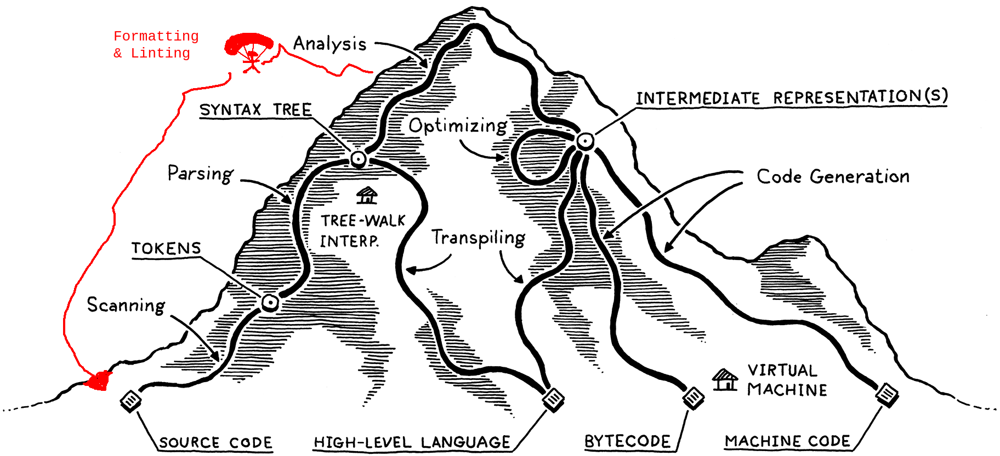

2023-06-01
JuLox: What I Learned Building a Lox Interpreter in Julia
Disclaimer: If you are unfamiliar with Robert Nystrom's book Crafting Interpreters and the Lox langauge it presents, parts of this post might be a bit confusing.
Backstory
Over the past two months, I put together a working tree-walk interpreter for Robert Nystrom's Lox language in Julia. Along the way, I have gone from knowing next to nothing about programming languages to... still knowing next to nothing about programming languages (how do Hindley-Milner type systems relate to Lambda Calculus you ask? Heck if I know!).
Luckily, however, this project did teach me something about putting together a tree-walk interpreter for Lox in Julia. I figure that now that I've crossed the finish line with my implementation, it might be fun to share my opinions and takeaways from the experience.
Also, although I built JuLox while following Nystrom's jlox narrative in chapters 4 through 13 of Crafting Interpreters, I designed and implemented JuLox a bit differently from jlox (particularly around the parser). Anyone who read and enjoyed those chapters of Nystrom's book might find the variations I describe in the next section to be particularly relevant and interesting.
The JuLox Fan Fiction
According to the official Crafting Interpreters wiki, there are two other implementations of Lox in Julia, one called Lox.jl and one (confusingly) called jlox (to disambiguate from Nystrom's official Java-based jlox, I'll henceforth call this one julia-jlox).
As far as I can tell, both of these tree-walk interpreter implementations are "by the book" at least as much as possible considering jlox is written in object-oriented Java code while Julia is not an object-oriented language. With JuLox, I did a few parts differently in an attempt to play with additional patterns not covered in Crafting Interpreters. Since the components of the jlox recipe map directly onto chapters of Crafting Interpreters, these deviations felt a bit like drafting (or at least outlining), my own little JuLox fan fiction.
Below I'll highlight and explain some of the differences, but first let's start with a visual overview of jlox vs JuLox (the diagram may not fully make sense to you yet, but I promise it'll be a helpful anchor for the rest of this section).
jlox │ JuLox
│
┌────────────┐ │ ┌────────────┐
│ Source │ │ │ Source │
Input │ Code │ │ Input │ Code │
│ │ │ │ │
└──────┬─────┘ │ └──────┬─────┘
│ │ │
▼ │ ▼
┌────────────┐ │ ┌────────────┐
│ │ │ │ │
Tokenization │ Tokens │ │ Tokenization │ Tokens ├──┐
│ │ │ │ │ │
└──────┬─────┘ │ └──────┬─────┘ │
│ │ │ │
│ Invalid ┌───────────┐ │ ▼ │
│ Syntax │ Error │ │ ┌────────────┐ │
Parsing ├─────────────────┤ Report │ │ │ Syntax │ │
│ │ │ │ Parsing │ Events │ │
│Valid └───────────┘ │ │ │ │
│Syntax │ └──────┬─────┘ │
▼ │ │ │
┌────────────┐ │ ▼ │
│ Lossy │ │ ┌────────────┐ │
│ Syntax ├─┐ │ Build │ Lossless │ │
│ Tree │ │ │ Lossless │ Syntax │◄─┘
└──────┬─────┘ │ │ Tree │ Tree │
│ │ │ └──────┬─────┘
▼ │ │ │
┌────────────┐ │ │ │ ┌───────────┐
Semantic │ Resolved │ │ │ Validate │ Invalid │ Error │
Analysis │ Variable │ │ │ Syntax ├────────────────►│ Report │
│ Scopes │ │ │ │ │ │
└──────┬─────┘ │ │ │Valid └───────────┘
│ │ │ ▼
│◄──────┘ Runtime ┌───────────┐ │ ┌────────────┐
Interpret │ Errors │ Error │ │ Build │ Lossy │
├────────────────►│ Report │ │ Lossy │ Syntax ├─┐
│ │ │ │ Tree │ Tree │ │
│No Errors └───────────┘ │ └──────┬─────┘ │
▼ │ │ │
┌────────────┐ │ ▼ │
│ Program │ │ ┌────────────┐ │
│ Output │ │ Semantic │ Resolved │ │
│ │ │ Analysis │ Variable │ │
└────────────┘ │ │ Scopes │ │
│ └──────┬─────┘ │
│ │ │
│ │◄──────┘ Runtime ┌───────────┐
│ Interpret │ Errors │ Error │
│ ├────────────────►│ Report │
│ │ │ │
│ │No Errors └───────────┘
│ ▼
│ ┌────────────┐
│ │ Program │
│ │ Output │
│ │ │
└────────────┘
High-Fidelity Tokenization
At the end of Chapter 4: Scanning in Crafting Interpreters, Nystrom presents us with Challenge #3 that states:
Our scanner here, like most, discards comments and whitespace since those aren’t needed by the parser. Why might you want to write a scanner that does not discard those? What would it be useful for?
If Nystrom were to follow up with a sequel to Crafting Interpreters called Crafting Linters and Formatters or Crafting Code Analyzers That Let You Ignore Stuff by Adding Special Comments, I trust that he would fill much of the book answering this question. And if he did write such a book, Nystrom might amend his mountain metaphor to include options that abandon code execution entirely and return safely from the peak of analysis back to the basecamp of source code (perhaps via gondola or snowmobile rather than the paraglider I've drawn in).

In an analyzer, formatter, or linter, comments and whitespace need to be programmatically consumed in order to determine the correct outputs. A concrete example of this is how the flake8 Python linter skips sections of code marked with a # noqa comment. Ensuring that comments survive tokenization is one way to enable downstream code parsing logic to check for that flag. Another example of why we might want to retain trivia (a fancy name for syntactically inert tokens like comments and whitespace) is to power code autoformatting — your formatter can't enforce a particular whitespace convention if tokenization drops all the whitespace!
Accordingly, in my JuLox fan fiction, Tokenization preserves all trivia. Does any part of JuLox actually do something with all this retained trivia? Well, no, not yet at least. But perhaps one day I'll want it, and so for now we hold onto it.
Here's a representative JuLox example that you can run in the Julia REPL to see lossless tokenization in action.
julia> collect(JuLox.Tokenize.Tokenizer("// Variable declaration.\nvar x = 42;"))
11-element Vector{JuLox.Tokenize.Token}:
1-24 Comment
25-25 NewlineWs
26-28 var
29-29 Whitespace
30-30 Identifier
31-31 Whitespace
32-32 =
33-33 Whitespace
34-35 Number
36-36 ;
37-40 EndMarker
One thing to bear in mind is that once you recognize and tag trivia during tokenization, it becomes pretty trivial (pun intended) to ignore or drop it later. Therefore there isn't much of a downside to keeping it around for later, while there is the upside that the tokenizer becomes a more general component suited for building non-interpreter tools like formatters and analyzers as well.
Streaming Parsing
Parsers turn token sequences into trees. It says so right there in Chapter 6 — "transmogrifying a sequence of tokens into one of those syntax trees." However, in recent years a hip new trend has sprung up in the parser game, possibly invented in (and certainly popularized by) rust-analyzer, of not actually doing that. Instead, these hipster parsers spit out an event stream rather than a syntax tree. Each event in the event stream specifies a syntax kind and token range and can be thought of as corresponding to the inner node of a hypothetical syntax tree.
If you're interested in where I read up on streaming parsing, check out the design notes and JuliaCon presentation video for JuliaSyntax.jl (the new Julia parser written in Julia), which give a nice explanation of how this design works and why it's nice.
Why streaming parsing? To me, splitting up parsing from tree creation feels like taking a page from the Unix Philosophy's dictate to "make each program do one thing well." By delegating the responsibility of building a syntax tree to a distinct component of our interpreter pipeline, we also delegate all the important tree-centric decisions like what to do with the trivia we've retained and how to ensure the tree data structure is performant. We could even wire up our same parser to different downstream modules to create different pipelines, e.g. one for linting and one for interpreting, in a clean way.
And so, in my JuLox fan fiction, parsing doesn't build a syntax tree, but rather it spits out a bunch of syntax events that tell us how we could build a syntax tree from our tokens.
Like this.
julia> JuLox.Parse.parse_lox("{var in_block = 2 + 2;}").events
4-element Vector{JuLox.Parse.Event}:
JuLox.Parse.Event(K"infix_operation", 7, 12)
JuLox.Parse.Event(K"var_decl_statement", 2, 13)
JuLox.Parse.Event(K"block", 1, 14)
JuLox.Parse.Event(K"toplevel", 1, 14)
One cool side effect of this design decision is that it lets the parser spit out syntax errors as events, letting downstream logic figure out how to stick errors into a syntax tree or otherwise handle them. I find that this keeps the already-involved parser code tamer by separating out the concern of error handling while also keeping our outputs organized.
julia> JuLox.Parse.parse_lox("{if;}").events
5-element Vector{JuLox.Parse.Event}:
JuLox.Parse.Event(K"UnparsedErrorRecovery", 4, 5)
JuLox.Parse.Event(K"expression_statement", 6, 5)
JuLox.Parse.Event(K"if_statement", 2, 6)
JuLox.Parse.Event(K"block", 1, 6)
JuLox.Parse.Event(K"toplevel", 1, 6)
A Lossless Syntax Tree
If you look back at the box diagram from the start of this section, I hope by now that you'll feel comfortable with the "syntax events" box on the JuLox side. You might still be wondering, however, about the two different syntax tree boxes work. Well, taking a page from JuliaSyntax.jl, rust-analyzer, the Roslyn C# parser, and probably many others, I've decided to continue with the "make each program do one thing well" mindset by keeping initial syntax tree creation as simple as possible, deferring additional complexity (like the task of dropping trivia) to an additional step.
As far as I can tell, various projects that have similarly opted for multiple syntax trees have each had different reasons (often related to performance) for making tree creation so incremental. For me, there was actually no good reason besides wanting to try something new (then again, that's really the only reason I have to build yet another Lox interpreter in the first place).
In JuLox, lossless trees are un-typed (i.e. all nodes from "Block" to "Variable" to "StringLiteral" are instances of either LosslessInnerNode or LosslessLeafNode, rather than having their own types). This has the benefit of making it easier to build a syntax tree out of invalid syntax.
Syntax Validation as a Separate Step
Further breaking apart JuLox's parser, I created a separate syntax validation step that runs on the lossless syntax tree. I decided to put syntax validation here in the interpreter pipeline because I thought a tree structure might be easier to validate than an event stream, but I also thought it would be nice not to worry about invalid syntax surviving to the later lossy syntax tree. Upon reflection, however, I don't know if this is a particularly good design choice, because a typed tree structure seems to be a more friendly object to work with when writing validation code. Indeed, according to the rust-analyzer docs, "[m]ost of rust-analyzer works with the ast layer" (its strongly-typed syntax tree API) for this reason.
The drawback of the rust-analyzer approach of allowing invalid syntax into the final tree, in my eyes, is that when out of necessity all fields are optional to accommodate incomplete and erroneous code, your downstream code needs to be ready for the possibility of missing fields due to erroneous code. Avoiding mistaken assumptions about the non-missingness of required fields is, I imagine, a lot easier with Rust's static sum types, pattern matching, and exacting compiler than it is in other languages like Julia. rust-analyzer also benefits from the fact that it doesn't have to interpret or compile its syntax trees after analysis (since that's the Rust compiler's job).
I should also mention that (at least at the time of writing), the JuLox syntax validation step just checks for error-typed nodes in the tree and doesn't provide any further syntax checks, so maybe this doesn't even need to be its own step.
Going Lossy
As noted above, the interpreter doesn't actually need to do anything with all the trivia we've held on to. Thus, as we head toward semantic analysis and interpretation, it's time to finally let go of all those comments and whitespace.
If there are no syntax errors, JuLox proceeds from lossless to lossy by building a second syntax tree on top of the first, lossless, tree, with the lossy tree's nodes holding references to the lossless tree's nodes. There isn't much else to discuss in this step, other than the fact that having this many separate steps of the parser didn't actually feel all that redundant compared to the more streamlined jlox approach.
Back to the Main Plot
From lossy tree onward into variable resolution and interpretation, JuLox sticks to the jlox recipe pretty closely, and so we have now reached the end of the JuLox fan fiction. If you look back up to the box diagram above, I bet you'll understand the whole thing now! I hope you enjoyed the tour.
Other Takeaways from my JuLox Experience
In addition to my takeaways from splicing my own parser design into the jlox recipe, I have a few takeaways from the project in general to share as well.
Interactivity is Cool for Crafting Interpreters
Since Julia is an interpreted language, we can run JuLox's many components incrementally and interactively in the Julia REPL. It only really dawned on me as I got into the project how cool and useful this is. Below is an illustrative example of what it can be like to run your interpreter piece by piece in a REPL. It feels pretty meta to watch your Julia interpreter interpret your Lox interpreter as it interprets some Lox code!
_
_ _ _(_)_ | Documentation: https://docs.julialang.org
(_) | (_) (_) |
_ _ _| |_ __ _ | Type "?" for help, "]?" for Pkg help.
| | | | | | |/ _` | |
| | |_| | | | (_| | | Version 1.9.0 (2023-05-07)
_/ |\__'_|_|_|\__'_| | Official https://julialang.org/ release
|__/ |
julia> using JuLox: JuLox
julia> source = "// Do a variable declaration.\nvar x = 123;"
"// Do a variable declaration.\nvar x = 123;"
julia> parse_result = JuLox.Parse.parse_lox(source);
julia> parse_result.events
2-element Vector{JuLox.Parse.Event}:
JuLox.Parse.Event(K"var_decl_statement", 1, 10)
JuLox.Parse.Event(K"toplevel", 1, 10)
julia> parse_result.tokens
10-element Vector{JuLox.Tokenize.Token}:
1-29 Comment
30-30 NewlineWs
31-33 var
34-34 Whitespace
35-35 Identifier
36-36 Whitespace
37-37 =
38-38 Whitespace
39-41 Number
42-42 ;
julia> lossless_tree = JuLox.LosslessTrees.build_tree(parse_result)
1:42 │[toplevel]
1:42 │ [var_decl_statement]
1:29 │ Comment "// Do a variable declaration."
30:30 │ NewlineWs "\n"
31:33 │ var "var"
34:34 │ Whitespace " "
35:35 │ Identifier "x"
36:36 │ Whitespace " "
37:37 │ = "="
38:38 │ Whitespace " "
39:41 │ Number "123"
42:42 │ ; ";"
julia> JuLox.SyntaxValidation.validate_syntax(lossless_tree)
JuLox.SyntaxValidation.Diagnostic[]
julia> lossy_tree = JuLox.LossyTrees.to_lossy(lossless_tree)
1:42 │[toplevel]
1:42 │ [var_decl_statement]
35:35 │ :x
39:41 │ 123.
julia> locals, diagnostics = JuLox.Resolver.resolve_scopes(lossy_tree)
(Dict{JuLox.LossyTrees.AbstractExpression, Int64}(), JuLox.SyntaxValidation.Diagnostic[])
julia> interpreter_state = JuLox.Interpret.InterpreterState();
julia> interpreter_state.environment.values
Dict{Symbol, Any} with 5 entries:
:getc => NativeFunction("getc", 0, try_read_char)
:exit => NativeFunction("exit", 1, #7)
:clock => NativeFunction("clock", 0, #5)
:chr => NativeFunction("chr", 1, try_parse_number_to_char)
:print_error => NativeFunction("print_error", 1, #8)
julia> had_error = JuLox.Interpret.interpret(interpreter_state, lossy_tree, source)
false
help?> JuLox.Entrypoint.run
No documentation found.
JuLox.Entrypoint.run is a Function.
# 1 method for generic function "run" from JuLox.Entrypoint:
[1] run(output_io::IO, error_io::IO, interpreter_state::JuLox.Interpret.InterpreterState, source::String, verbose::Bool)
@ ~/Code/playground/JuLox/src/entrypoint.jl:51
julia> return_code = JuLox.Entrypoint.run(stdout, stderr, interpreter_state, "print(x + 1);", false);
124
Low Performance Julia Code
Another surprising learning from making JuLox was finding out just how slow Julia can be in its edge cases (like operating a tree-walk interpreter). In his book, Nystrom warns us that tree-walk interpreters are slow, and I was curious just how slow this was. To get a rough sense, I ran a recursive Fibonacci sequence benchmark taken straight from the book though a number of different Lox interpreters.
// Here is the Lox code for the benchmark.
fun fib(n) {
if (n <= 1) return n;
return fib(n - 2) + fib(n - 1);
}
for (var i = 0; i < 20; i = i + 1) {
print fib(i);
}
In Nystrom's jlox, this program takes 0.5 seconds on my laptop, while clox blazes through it in around 0.01 seconds. For a third point of reference, I clocked the loxscript Python implementation and got 0.34 seconds, which surprised me as seeming quite snappy compared to jlox.
Next I tried out the Julia-based Lox interpreters, and I was amazed at how much slower they are!
Here's a table of my experiments. I even tried running things repeatedly in a Julia REPL to ensure ahead-of-time compilation after I noticed that JuLox took over a second to handle an empty file (despite my best attempts at precompiling it with PrecompileTools.jl). Even with everything compiled ahead of time, runtimes were still at best about an order of magnitude slower than Python across all three Julia Lox implementations.
| Lox Flavor | Implementation Language | Runtime in Seconds | Allocations* | Compilation Time* |
|---|---|---|---|---|
| jlox CLI | Java | 0.5 | ||
| clox CLI | C | 0.01 | ||
| loxscript CLI | Python | 0.34 | ||
| lox.jl CLI | Julia | 3.1 | ||
| julia-jlox CLI | Julia | 24 | ||
| JuLox CLI | Julia | 2.52 | ||
| lox.jl in REPL | Julia | 3 | 1.60 M allocations: 107.140 MiB | 21% |
| lox.jl in REPL second run | Julia | 2.4 | 674.48 k allocations: 44.386 MiB | 0% |
| julia-jlox in REPL | Julia | 29 | 38.05 M allocations: 2.423 GiB | 5% |
| julia-jlox in REPL second run | Julia | 27 | 36.12 M allocations: 2.293 GiB | 0% |
| JuLox in REPL | Julia | 3.1 | 1.33 M allocations: 75.975 MiB | 7% |
| JuLox in REPL second run | Julia | 2.9 | 1.15 M allocations: 64.179 MiB | 0% |
*Allocations and compilation time only available inside the Julia REPL (via the @time macro).
Now, I'm not claiming that Julia should do better at this use-case. Implementing a tree-walk interpreter for a dynamically-typed languages is a bit of a niche application after all, and its quite far from Julia's numerical computing focus. However, I was certainly surprised by the slowness, and I was also surprised how profiling JuLox with Profile.jl and ProfileSVG.jl didn't really enlighten me abut any hot spots (perhaps highly recursive code is a bad match for this kind of profiling?). I wonder if any of the developers of Julia might find this to be an interesting case study.
Julia is Still Great for Writing High Performance Code
In case you don't believe me that this poor performance is an exception rather than the rule with Julia, let me present you an example of where Julia shines. Here is how Julia lets us express our recursive Fibonacci benchmark program simply (without any explicit type annotations) while also running it blazingly quickly (at least an order of magnitude faster than clox).
# Recursive fibonacci in Julia.
# 0.02 seconds at 99% compile time the first run, and 0.0002 seconds for a second run.
fib(n) = if n <= 1 n else fib(n - 2) + fib(n - 1) end
@time for i in 0:19 println(fib(i)) end
What's Next for JuLox
I want to build two extensions to JuLox.
First, I want to build an odd kind of tree-to-tree compiler that translates a Lox syntax tree into a Julia syntax tree. This shouldn't be too hacky, since the structure of Julia programs can be manipulated in Julia itself (indeed, this is so-called homoiconicity is what powers Julia's macro system). My ambition is to make JuLox as fast or faster than clox for heavy workloads (e.g. to have the above Lox recursive Fibonacci benchmark run just as fast in JuLox as the native Julia code I presented after).
I also think such a tree-to-tree compiler is an interesting paradigm in its own right, since it sits between a traditional transpiler paradigm (in which we aim to spit out the source code of a high-level language that must go through tokenization and parsing again, making debugging and error handling trickier) and the paradigm of compiling to a VM bytecode built originally for another language (e.g. how Scala targets the JVM, or how Elixir targets the Erlang VM). Since Julia IR lowers straight into LLVM IR with no VM, this approach is perhaps closer to the second paradigm than the first, but it feels substantially higher level.
The second I'd like to build is a language server protocol (LSP) implementation for Lox. Thanks to JuLox's lossless tokenization and syntax trees, it should be possible to even build features like auto-formatting on top of JuLox's tokenization, parsing, and semantic analysis. And since Julia has its own LSP implementation, it might be possible to borrow much of the HTTP server boilerplate and focus mostly on the Lox parts.
Getting JuLox
If for some reason this post has left you yearning to dive even deeper into JuLox, you will be pleased to learn that JuLox is available on GitHub as JuLox.jl, an MIT-licensed Julia package with a lightweight CLI built in. So if you are so inclined, take a peak, give it a test drive, or borrow some of its code for your own project!